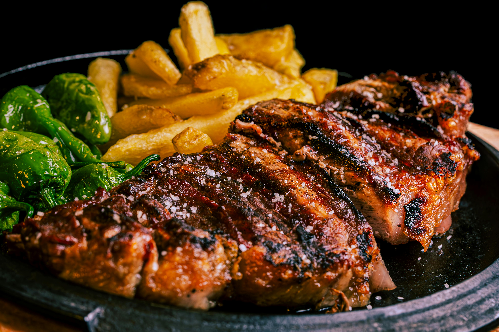

Home
Slow Cooker Pepper Steak

Description:
A slow cooked pepper stead that you can enjoy with lots of different sides.
Ingredients:
- 2 lbs beef sirloin, cut into 2 inch strips
- 3/4 teaspoon garlic powder, to taste
- 3 tablespoons vegetable oil
- 1 cube beef bouillon
- 1/4 cup hot water
- 1 tablespooon corn starch
- 1/2 cup chopped onion
- 2 large green bell peppers, roughly chopped.
- 1 (14.5 oz) can stewed tomatoes, with liquid
- 3 tablespoons soy sauce
- 1 teaspoon white sugar
- 1 teaspoon salt
Steps:
- Gather all ingredients.
- Sprinkle beef sirloin strips with garlic poweder. Heat vegetable oil in a large skillet over medium heat and sear beef strips, about 5 minutes per side. Transfer to a slow cooker.
- Mix bouillon cube with hot water in a seperate container until dissolved, then mix in cornstarch until dissolved.
- Pour into slow cooker with beef tips. Stir in onion, green peppers, stewed tomatoes, soy sauce, sugar, and salt.
- Cover and cook on High for 3 to 4 hours, or on Low for 6 to 8 hours.
- Serve hot and enjoy!